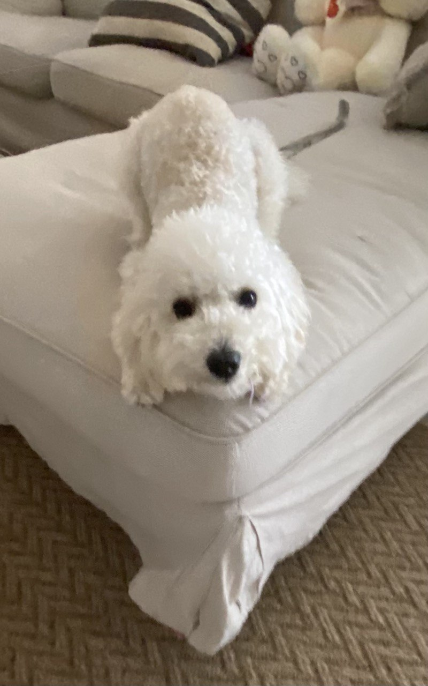
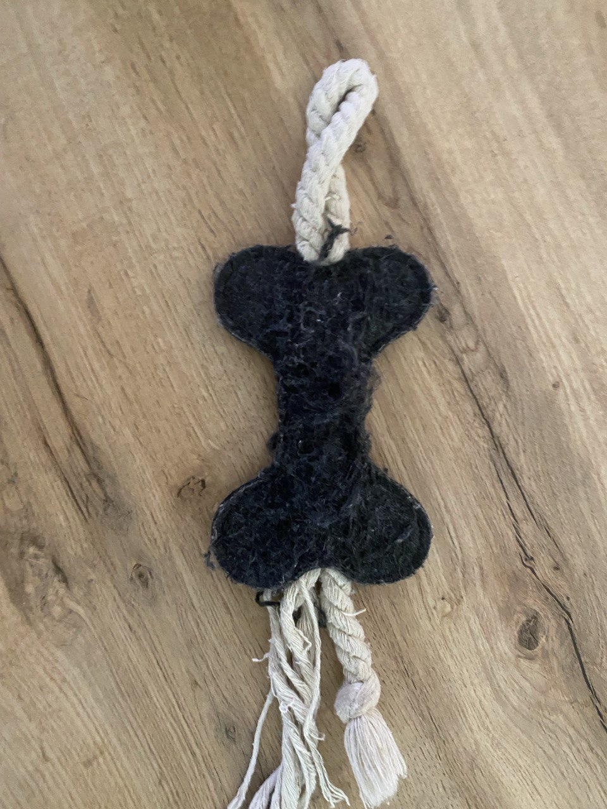

Про собаку
Моя собака народилася 7 жовтня. Вона бадьора, весела, дуже полюбляє гратися. Її улюблена іграшка - кісточка. Я її дуже люблю. Вона молочного кольору. Вона породи Мальтпу.
 
Що моя собака їсть
| Сніданок | Сир кисломолочний |
| Обід | Корм |
| Вечеря | Корм або сметана |